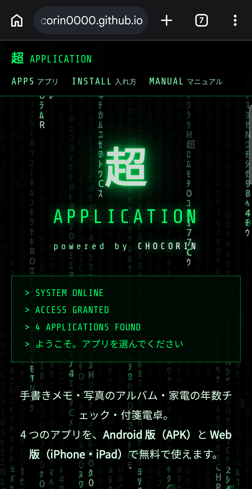
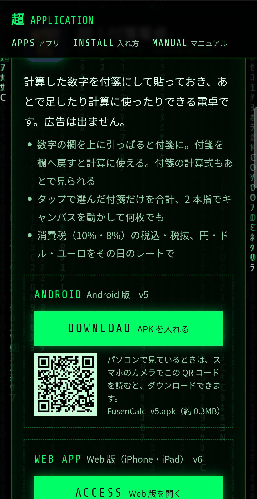
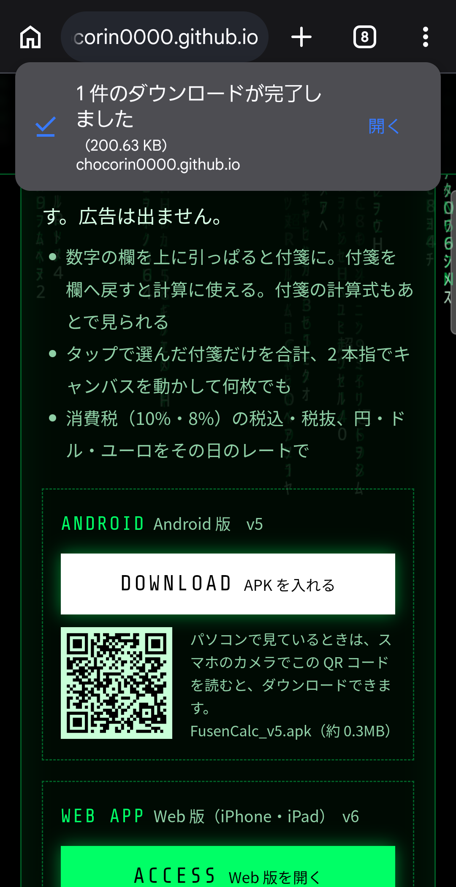
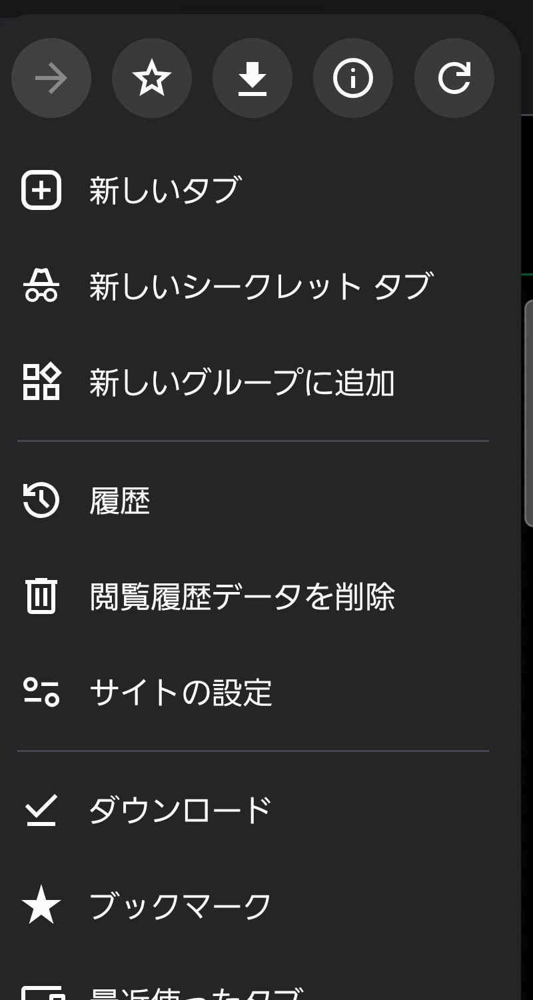
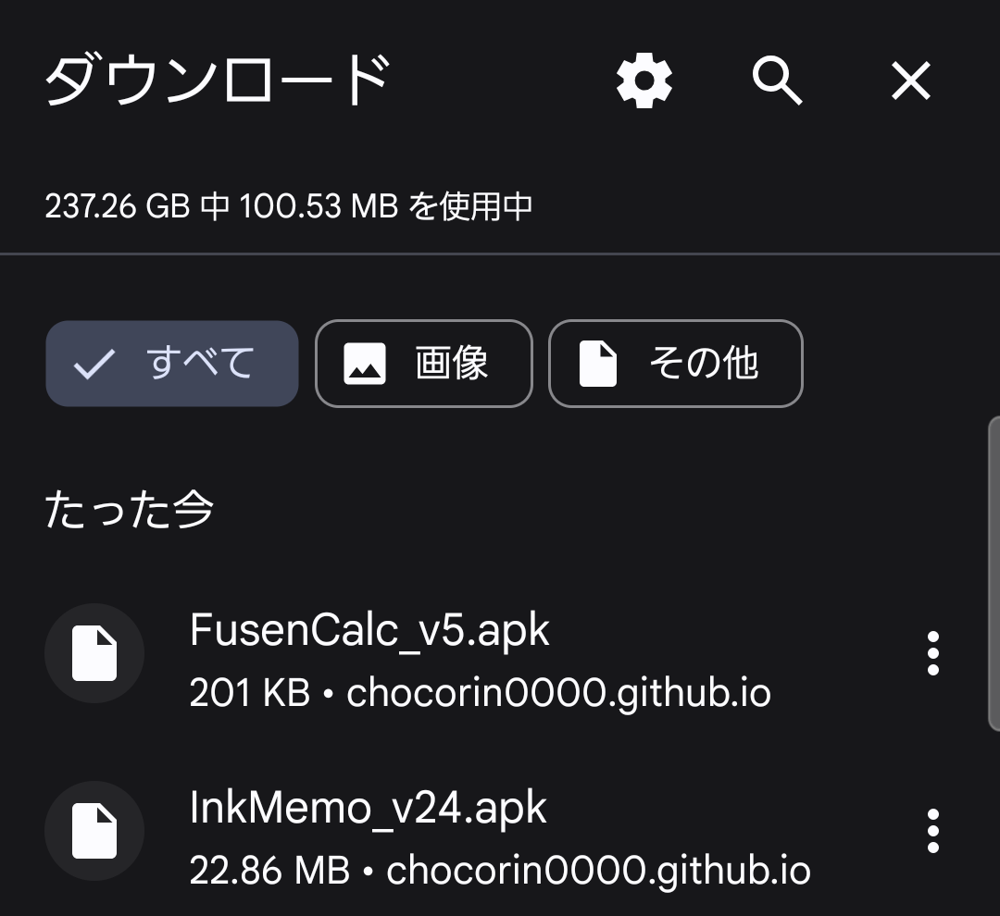
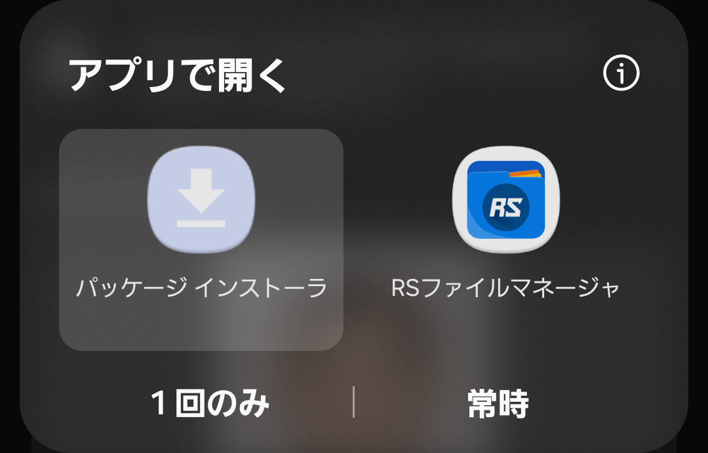
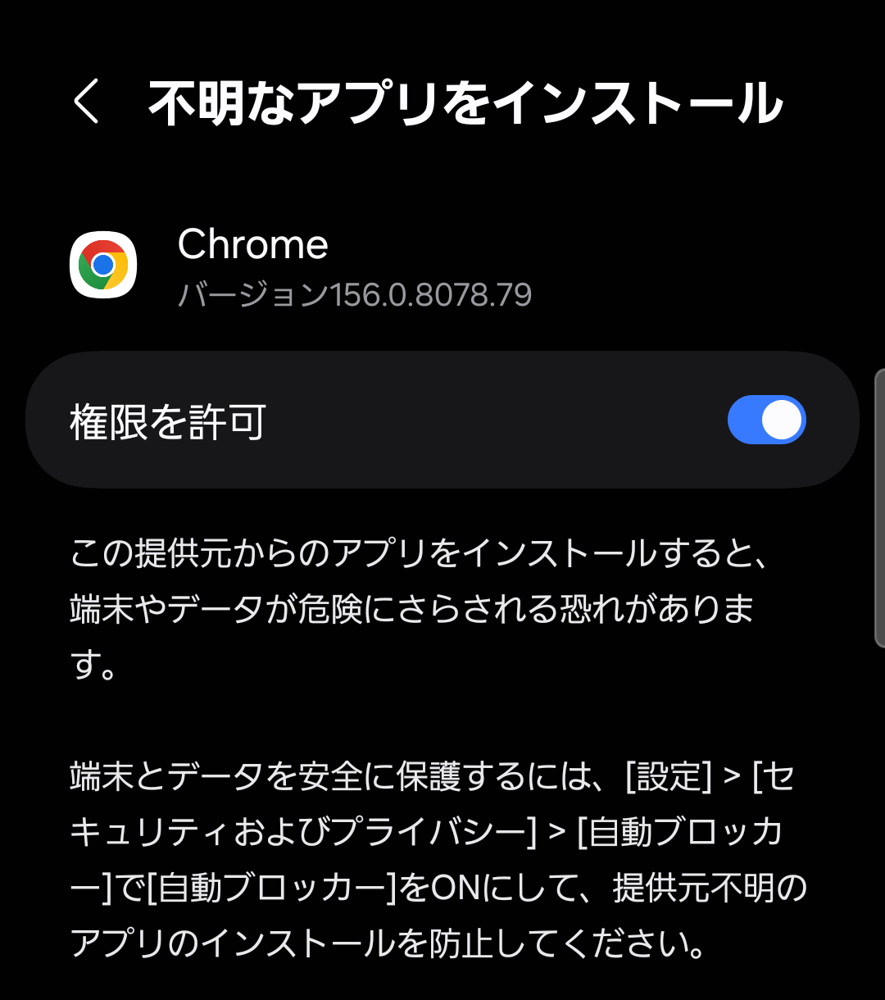
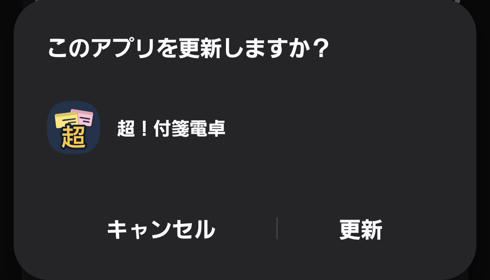

（ホームページからダウンロードして入れる 2026-11-05 作成）
このマニュアルは、ホームページ「超 APPLICATION」から Android 用のアプリ（APK）をダウンロードして、スマホに入れる方法を説明したものです。
APK（エーピーケー）は、Android のアプリが 1 つに入ったファイルです。ファイル名の最後が「.apk」になっています。
ふつうのアプリは Google Play（アプリのお店）から入れますが、ここのアプリは Google Play に出していないので、ホームページから APK をダウンロードして、自分で入れます。
| 順番 | すること | 何回必要か |
|---|---|---|
| 1 | スマホの Chrome でページを開く | 毎回 |
| 2 | DOWNLOAD を押す | 毎回 |
| 3 | 「開く」を押す | 毎回 |
| 4 | 提供元（Chrome）を許可する | 最初の 1 回だけ |
| 5 | 「インストール」を押す | 毎回（前の版があるときは「更新」） |
| 6 | ホーム画面のアイコンから開く | 毎回 |
スマホの Chrome で https://chocorin0000.github.io/ を開きます。
パソコンでページを見ているときは、アプリの欄の QR コードをスマホのカメラで読むと、ダウンロードできます。



完了の表示の「開く」を押します。


ファイルを扱うアプリが入っていると、どのアプリで開くか聞かれます。「パッケージ インストーラ」を選んで「1 回のみ」を押します。

最初の 1 回だけです。「提供元不明のアプリ」や「不明なアプリ」の表示が出たら、次のようにします。

カメラやマイクなど、アプリが使うものの許可を聞かれたら、そのアプリのマニュアルを見て許可してください。
ホームページに新しい版が出たら、同じようにダウンロードして開きます。すでに入っているときは「このアプリを更新しますか？」と出るので、「更新」を押します。

| こんなとき | すること |
|---|---|
| 「開く」が消えた | 5 章のとおり、「︙」→「ダウンロード」からファイル名を押します |
| 何度も押して、同じファイルが増えた | 「︙」→「ダウンロード」の一覧で、いらないものの右の「︙」→「削除」を押します |
| インストールが止められる、許可の場所が出ない（Galaxy） | 「自動ブロッカー」が ON だと入れられません。設定 → セキュリティおよびプライバシー → 自動ブロッカー を確かめます。OFF にするのは入れる間だけにして、終わったら戻してください |
| 「アプリをインストールできませんでした」 | スマホの空き容量を確かめます。Android の版が古いと入らないことがあります |
| 「パッケージの解析エラー」と出る | ダウンロードが途中で切れた可能性があります。もう一度ダウンロードします |
| ファイルがブラウザの画面で開いてしまう | Chrome で開き直して、もう一度 DOWNLOAD を押します |
| アイコンが見つからない | ホーム画面を横に動かすか、アプリの一覧を探します。名前が長いと、最後が切れて見えることがあります |
| iPhone で入らない | APK は Android 専用です。iPhone・iPad は Web 版（ACCESS）を使ってください |